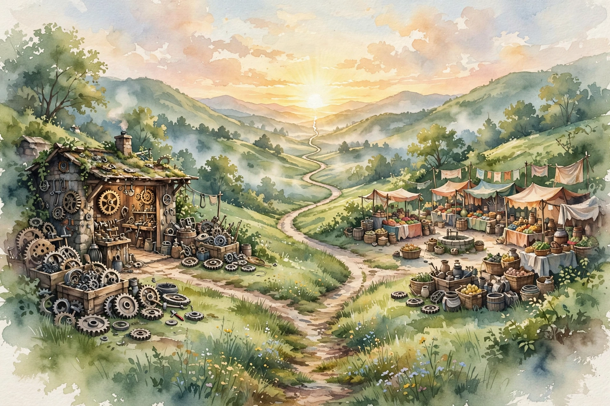

Naval Ravikant · The Skill Stack · Companion
Learn to Sell, Learn to Build
The two-skill thesis: building the product and selling the vision, the cofounder pair that built Apple and Microsoft, why one person with both is unstoppable, and why you should learn building first and selling second.
Illustration. The hammer and the pen: the two tools of the unstoppable. AI-generated watercolor made for this page.
Watch. The official Naval podcast episode video. Use the chapter menu above to jump to any section of this companion as you listen.
The Wisdom Index: every nugget in this companion
00:00
Two broad categories
Nivi opens with the tweet: "learn to sell, learn to build, if you can do both, you will be unstoppable". Naval calls them two broad categories, each with many definitions.
Building the product is hard and multivariate: design, development, manufacturing, logistics, procurement, even designing and operating a service. In tech the builder is the CTO or the engineer. In a laundry business it is whoever makes the trains run on time and gets every garment to the right place at the right time.
Wisdom nugget 1
Source factName your category honestly
What happened. Naval defines building and selling as umbrella categories that exist in every industry, not just tech.
Why it matters. People mislabel themselves. A laundry operator who perfects the route is a builder. A coder who only demos is not.
Principle. Write down which category pays you today. Then write down which one you avoid, and why.
00:02
Selling is also broad
Selling is not just closing customers. The umbrella covers marketing, communicating, recruiting, raising money, inspiring people, PR. Anything where you move other humans toward your idea counts.
This breadth is the point. You do not need to become a cold-caller. A builder who learns to write well learned to sell. A builder who learns to recruit learned to sell.
Illustration. The hammer and the pen: the two tools of the unstoppable. AI-generated watercolor made for this page.
Wisdom nugget 2
Source factRedefine selling until it fits
What happened. Naval stretches selling to cover writing, recruiting, fundraising, and inspiration, so builders can enter through their own door.
Why it matters. Builders reject selling because they picture the worst version of it. The broad definition removes the excuse.
Principle. Pick the selling flavor closest to your nature: writing, one-on-one, or stage. Then train that one deliberately.
00:04
The Silicon Valley model
The most common winning pattern: two founders, one world-class at selling, one world-class at building. Steve Jobs and Steve Wozniak at Apple. Gates and Allen in the early Microsoft years. Larry and Sergey at Google, roughly along the same lines, though the product was so technical the split looked different.
Venture investors are trained to look for the combo. It is the magic combination because the company can both make the thing and make the world want the thing.
The builder-seller matrix
The episode's map of who wins. One skill is good. Both is superpowers.
Source. Diagram of the episode's argument. The examples in the boxes are the episode's own.
Wisdom nugget 3
Source factPair the missing half
What happened. Naval names the builder-seller cofounder pair as the repeating pattern behind Apple, Microsoft, and Google.
Why it matters. Solo founders usually lack one half. The pair is not about friendship. It is about covering both categories.
Principle. If you are a builder, your most important hire or cofounder is a seller, and the reverse. Do not pair with your clone.
00:06
Do both and you are unstoppable
The ultimate is one person who does both. That is when you get true superpowers, people who create entire industries. The living example is Elon Musk: he may not weld the rockets, but he understands the technology deeply enough to make real technical contributions, and nobody can snow him on it.
Steve Jobs grew enough product skill to operate in both domains. Larry Ellison started as a programmer, wrote the first version of Oracle or was deeply involved in it. Marc Andreessen wrote Netscape Navigator, or a big chunk of it. The pattern holds: the real giants in any field master both.
The real giants in any field are the people who can both build and sell.
Naval Ravikant, from the episode

Illustration. The fork that rejoins: build and sell as two roads to the same sunrise. AI-generated watercolor made for this page.
Wisdom nugget 4
Source factBecome the pair
What happened. Naval argues that individuals who master both categories, Musk, Jobs, Ellison, Andreessen, operate at a different level than any pair.
Why it matters. Pairs have coordination cost. One person with both skills has none, and investors know it.
Principle. Treat the second skill as a ten-year project. You do not need both today. You need a plan to own both eventually.
00:08
Teach the engineer marketing
Building is the harder half to add late. It takes too much focused time, and a salesperson cannot pick it up mid-career. But a builder can pick up selling later, especially with some natural communication wiring. Naval quotes the Bill Gates line: "I’d rather teach an engineer marketing, than a marketer engineering."
The selling you learn does not have to be hand-to-hand. A builder who writes well becomes an online communicator. A builder who is good one-on-one aims at recruiting and fundraising. Match the medium to your nature.
Toy: the skill-stack checker
Rate yourself 1 to 10 on each skill. The episode says the combination matters more than either peak.
Wisdom nugget 5
Source factSequence it: build first, sell second
What happened. Naval says building must come first because it cannot be added late, while selling can be layered on by a builder with time and focus.
Why it matters. Young builders who chase sales polish too early trade the hard asset for the soft one.
Principle. Front-load the building years. Add the selling layer through writing, then recruiting, then fundraising, in that order of difficulty.
00:10
If you must pick one
Nivi forces the choice: if you could only pick one, which? Naval's answer starts with building. When you are unknown, building stands out, because the world is full of hustlers with nothing to back them up. A real thing cuts through noise.
Later, the math flips. Building is a focus job. It exhausts, and younger people arrive with newer tools and more hours. Selling scales better with age. A reputation for building great products gets re-validated on every launch, but a reputation for being persuasive and good to do business with becomes almost self-fulfilling. His cop-out, which he calls the right answer: start with building, then move into sales.
Wisdom nugget 6
Source factLet the career have seasons
What happened. Naval says building wins early because it signals through noise, while selling wins late because reputation compounds and focus fades.
Why it matters. Careers have seasons. Fighting the season, selling when unknown or grinding code at 60, wastes your edge.
Principle. In your building season, ship. In your selling season, connect. Plan the handoff before the season changes.